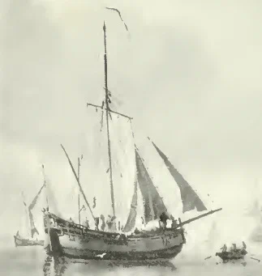
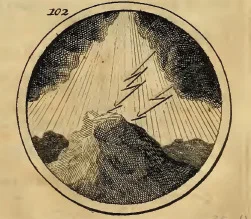
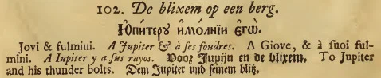
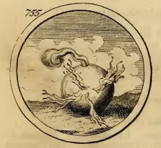
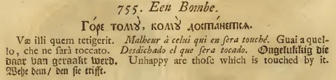

Итак мы подошли к следующему классу кораблей Азовского флота – бомбардирским судам. Если все предыдущие типы кораблей, построенных на воронежских верфях, представляли собой скорее корабли из прошлого, то данный класс был относительно современным, он только что появился во флотах европейских стран. Считается, что идея построить корабль подобного типа впервые была выдвинута французским инженером-кораблестроителем Бертраном Рено д’Элисагарэ, им же и реализована. Первое применение бомбардирских судов отмечено при бомбардировке Алжира в августе 1682 года.
Ввиду того, что в литературе и в Сети информация о Б.Рено крайне противоречива, позволю себе сказать несколько слов о нем и об изобретенном им корабле.
Прежде всего о его имени. Не только на русском, но и на английском, и на родном для Рено французском языке написание его существенно различается.
В современных словарях имя замечательного французского инженера пишется Bernard Renau d'Éliçagaray (ou Bernard Renau d'Élissagaray), dit le Petit Renau ou le Poète de la mer – Бернар Рено д’Элисагарэ, Коротышка Рено или Поэт моря (это написание сразу отвергает русскую транслитерацию «д’элиЗагарэ»), однако в английских источниках и в ряде старых французских справочников встречается написание «d'Elisagaray».
Первоначально изобретенные Рено корабли назывались galiotes à bombes. Этим подчеркивалась связь вновь изобретенных судов с голландским галиотом (galleot). Сохранилось изображение голландского галиота того времени на картине Абрахама Сторка, написанной в 1683 г.

Корабль этот существенно отличается от других подобных судов. Обводы полной кормы свидетельствуют о достаточно хорошей мореходности, в том числе и при крепком ветре. Бизань-мачта несет латинский парус, а грот-мачта – прямой парус. Перед грот-мачтой размещаются стаксель и кливер. Бушприт, видимо, нес блинд, хотя на изображении Сторка его нет. Фок-мачта отсутствует. Эта особенность такелажа галиота и была использована Рено для своего изобретения. Поместив одну или две мортиры на платформе в большой люк перед грот-мачтой, он обеспечил ведение огня без помех по носовым курсовым углам. Как это выглядело полвека с лишним спустя можно увидеть здесь. Высокий надводный борт, большое водоизмещение и своеобразная оснастка показывают в galiotes à bombes предшественника английских кетчей, получивших большое распространение в дальнейшем, в том числе и в качестве бомбардирских кораблей. В Англии эти кетчи назывались bomb ketches, bomb brigs, bombards, или просто bombs. Небольшим отличием бомбардирских кетчей от галиотов-прототипов являлось наличие квадратного топселя над латинским парусом бизани, а также марселя и брамселя на грот-мачте.
Голландцы считают, что именно они являются изобретателями бомбардирских судов, основные характеристики которых (прежде всего, большую прочность набора корпуса, которая позволяла воспринимать силу отдачи мортир) использовали для постройки своих кораблей этого класса французы и англичане.
Документальных сведений о конструкции русских бомбардирских судов не сохранилось. Известны только их размеры: длина – до 90 футов, ширина – 28 футов. Каждое из них было вооружено двумя мортирами. В отличие кораблей других классов, которые строились для Азовского флота, конструкция бомбардирских судов в процессе постройки практически не менялась.
Названия бомбардирских судов выбирались в соответствии с их предназначением. Эта традиция существовала не только в русском, но и во французском, английском и позже в американском флотах. Первые пять французских galiotes à bombes, участвовавших в бомбардировке Алжира 1682 г., носили названия La Menaçante - грозный, La Cruelle - жестокий, La Bombarde, La Foudroyante – сокрушительный и La Brûlante – испепеляющий. Англичане и американцы давали кораблям этого типа названия вулканов (Aetna, Hecla) или эпитеты, соответствующие их огневой мощи (например, Thunder – гром, или Spitfire - вулкан).
Под стать были названия и первых русских бомбардирских судов. Итак, продолжаем список кораблей Азовского флота:
Бомбардирские корабли или ших-бомбарды.
Вооружение каждого состояло из двух мортир и 12 пушек.
Следующие ниже четыре корабля заложены в 1697 г. в селе Чижовка. Спущены на воду в 1699 г.
67. Громъ (Дондеръ) (Гостиное кумпанство)
58. Молнія (Бликсемъ). (Гостиное кумпанство)
59. Громовая стрѣла (Дондеръ пейлъ). Юпитеру и молніи его. (Гостиное кумпанство).
 
60. Миротворецъ (Вредемакаръ). (Гостиное кумпанство).
Следующие два корабля заложены в Воронеже в 1697 году:
61. Бомба. Горе тому, кому достанусь. (Кумпанство Троице - Сергиева монастыря).
 
62. Агнецъ (Ламготесъ). (Кумпанство Троице - Сергиева монастыря).
63. Страхъ. (Сшхрекъ). (Кумпанство Троице - Сергиева монастыря). (Заложен в Воронеже в 1698 г.)